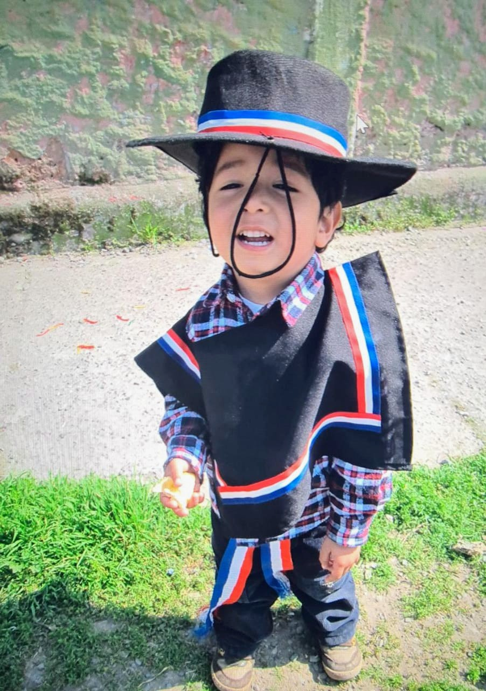
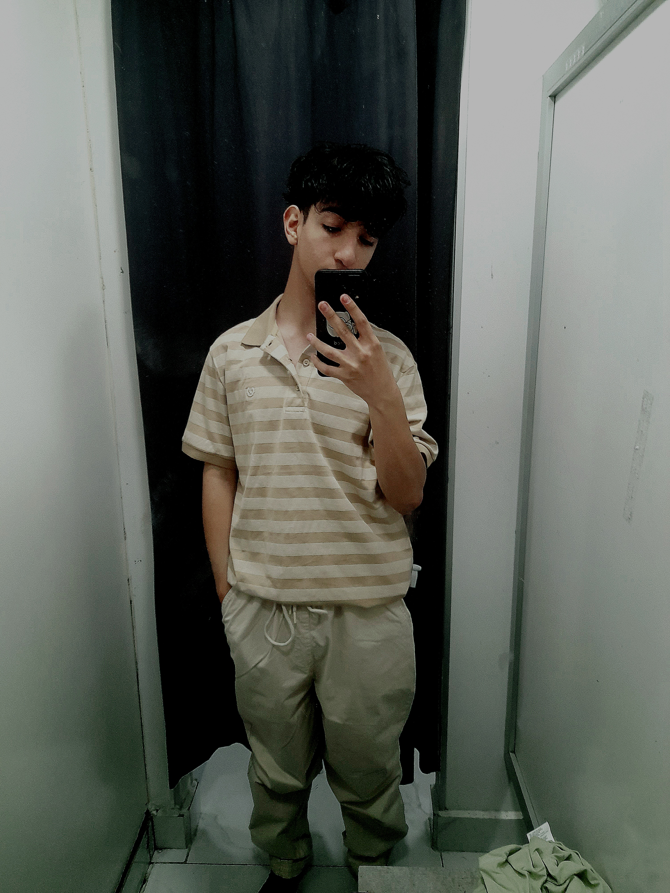
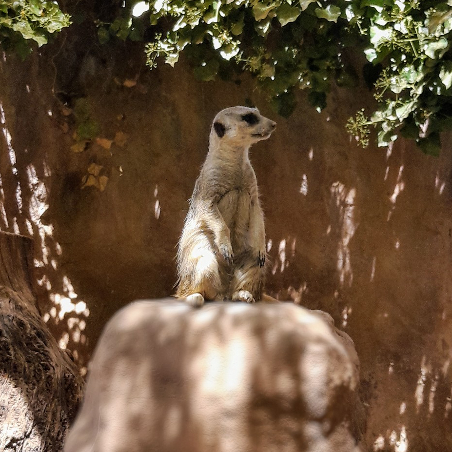

Inicio
Criado por mi padre Rene Pereira y madre Yanet Ramirez, nacido el 4 de Mayo de 2009 en San Bernardo, desde chico interesado por aprender mas en cuanto informacion y habilidades

Criado por mi padre Rene Pereira y madre Yanet Ramirez, nacido el 4 de Mayo de 2009 en San Bernardo, desde chico interesado por aprender mas en cuanto informacion y habilidades

Hoy me encuentro cursando el Tecnico Profesional de programacion, donde tengo una profe que busca formarme con valores que beneficien mi futuro laboral y tambien como persona, Me gusta el deporte como Basquetbol, Volley y proximamente empezar a entrenar y ademas el 60% de mis dias lo paso escuchando musica

Quieres conocer sobre mi futuro, o puedes ir a la pestaña de mis sueños desde el navbar o si quieres acceder desde aqui -> Ir a Mis Sueños